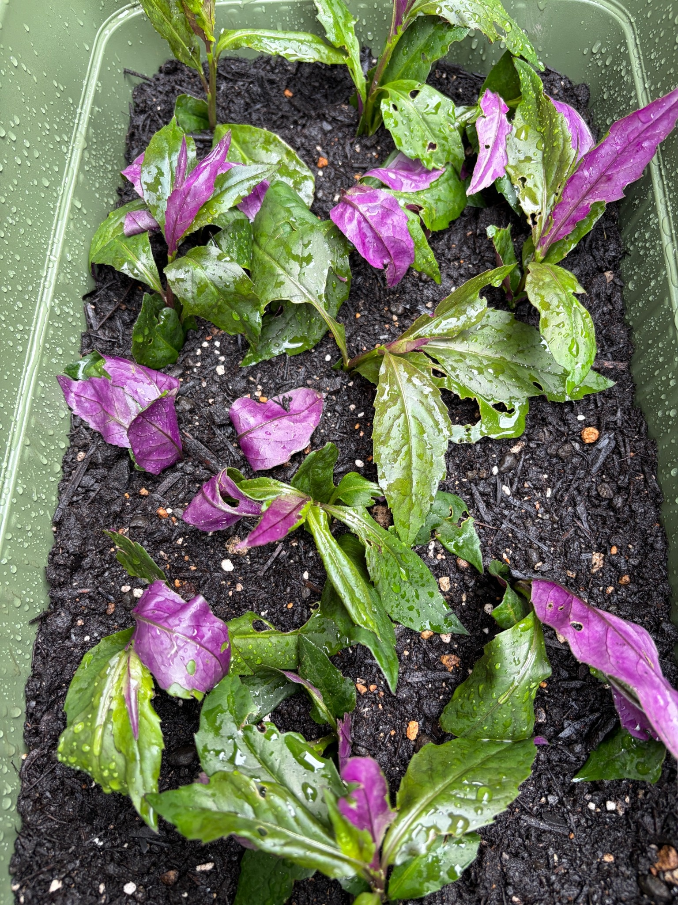

春のアサギマダラを楽しみに、金時草の栽培を開始
金時草は、春に咲く花へアサギマダラが吸蜜に訪れる植物として知られています。わが家でも花を咲かせ、蜜を求めて立ち寄ってくれる姿を見られたらと思い、育ててみることにしました。
JAで野菜として販売されていた金時草を1束購入しました。量は少ないものの、このひと束から育ててみようと、プランターに植え付けました。食用として売られていた金時草が、これからどのように育っていくのか楽しみです。
花や蕾はまだ見られず、葉を付けた茎が並ぶ
7月12日現在、花は咲いておらず、写っている枝先にも蕾や花房は見られません。プランターには葉を付けた茎が間隔を空けて並び、株の間には土が広く見えています。まだプランター全体を覆うほどには茂っておらず、これからの生育を見守る段階です。
茎はまっすぐ立つものもあれば、斜めに傾いて葉を広げているものもあります。葉の付き方や茎の向きにはばらつきがあり、葉が重なっている部分と、土がよく見える部分が分かれています。
緑色の葉表と、鮮やかな紫色の葉裏
葉の表側は緑色で、裏側には鮮やかな紫色が見えます。横を向いた葉や反り返った葉では紫色の面が大きく現れ、緑色の葉と入り交じっています。茎にも赤紫色を帯びた部分があり、葉裏とともに金時草らしい色合いが目立ちます。
大きく開いた葉は細長く、先端がとがっています。枝先には、大きな葉の間からのぞく小さな葉も見られます。ただし、この時点では植え付け後に新しく伸びたものかどうかはまだ分からず、今後の変化を見ていきたいと思います。
葉やプランターの内側には水滴が多く付き、土の表面も湿っています。濡れた葉にはつやがあり、緑色と紫色がはっきりと見えています。
葉の穴や傷みも見られる
一部の葉には、小さな丸い穴や不規則な形の穴があります。葉の縁が欠けているものや、先端付近が茶色く傷んでいるものも見られ、すべての葉がきれいな状態というわけではありません。
また、葉が折れ曲がったり、裏返って紫色の面を上に向けたりしている部分もあります。こうした傷みや葉の向きが、植え付け後にどう変化するかも見守っていきます。
まずは根付き、枝葉が増えることを楽しみに
春の開花とアサギマダラの訪花を楽しみに始めた金時草の栽培ですが、まずはプランターで根付き、枝葉を増やしてくれることを願っています。
少量のひと束からの出発です。これから茎が伸び、枝分かれして葉が増えていく様子を記録しながら、花を楽しめる株へ育てていきたいと思います。
